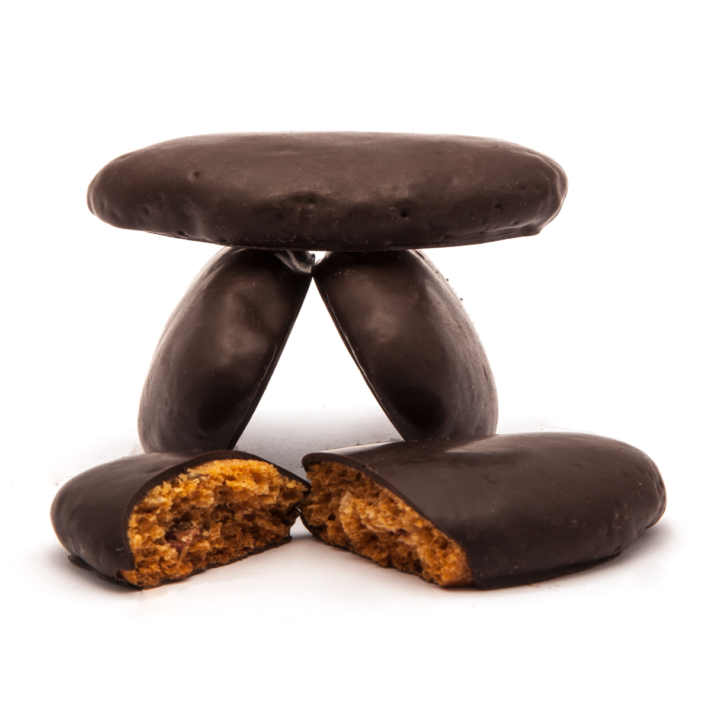

Susumelle

Each region of Italy has its own culture and unique traditions, which are especially celebrated as Christmas
approaches. This holiday brings back the oldest customs and traditional recipes, jotted down by grandmothers in
their notebooks. While you won't often find a precise number, these are the best recipes, reminding us of our
youth and Sunday family lunches. Susumelle, also known as pitte di San Martino, are one of the most delicious
desserts prepared in Calabria during the Christmas holidays. A cinnamon-flavored biscuit dough, made without
butter or eggs, just honey and a little milk. Susumelle are both crunchy and soft, and will be a hit with both
adults and children thanks to a generous layer of chocolate! Make these traditional Calabrian Christmas cookies
yourself ; thanks to their long shelf life, they'll be a staple throughout the holidays!
Ingredients for 20 susumelle
- 00 flour
- 500gr
- Sugar
- 200gr
- Cinnamon
- 8 gr
- Bitter cocoa powder
- 10gr
- Honey
- 200gr
- whole milk
- 60ml
- Water
- 50ml
- Baking Powder
- 16gr
For Coverage
- Dark chocolate
- 200gr
How to make them
- To prepare the susumelle, start by pouring the honey and the water in the saucepan and heat it gently over
low heat, just enough time to melt it.
- A parte in un'altra ciotola setacciate la farina, il lievito e il cacao.
- Then add the cinnamon powder, granulated sugar and the milk at room temperature.
- Also incorporate the now lukewarm honey and mix with your hands until you get a fairly uniform mixture.
- At this point transfer it to a flat surface, sprinkle with a little flour and roll out with a rolling pin until it reaches a thickness of about 1 cm1 using an oval cookie cutter about 9 cm long, cut out your biscuits and using a spatula lift them gently
- Transfer them gradually onto a baking tray lined with baking paper.19placing them well spaced apart from each other.
- Bake in a static oven on the middle shelf at 190°C for about 15 minutes
-
temperature and time will need to be adjusted based on your oven; as soon as you see cracks on the surface of the biscuits, it's time to take them out
- Once ready, you can remove the pan from the oven and let them cool down.
-
Continue baking the remaining cookies, kneading the scraps of dough and rolling them out again.
- Let your susumelle cool completely and, in the meantime, melt the chocolate in a bain-marie.
- When the chocolate is lukewarm, dip only the top part of the biscuits in it and place them back on the grill.
- Let them dry at room temperature for about an hour and enjoy your susumelle for a special Christmas
-
The susumelle can be stored for 2 weeks in an airtight container, preferably without chocolate.
Tips
Instead of dark chocolate, you can use white chocolate and sprinkle with chopped dried fruit.
Home